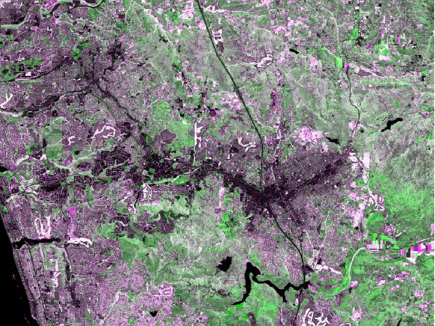

We can now make a composite of the April and November NDVI layers.
| Step 1. Select both of the NDVI images in the Image Analysis window. To do this, click on NDVI_composite_april_2011.img, then hold down the CTRL key while you click on NDVI_composite_november_2011.img. It doesn't matter whether the boxes are checked, by the way, you just need both images selected for this to work. | |
| Step 2. Click on the Composite button in the Image Analysis window. This will combine the NDVI bands into a single image with two layers. The first in the list (April) becomes Layer_1, and the second (November) becomes Layer_2 in the composite. | |
| Step 3. Assign April 2011 (Layer_1) to Green, and assign November 2011 (Layer_2) to both Red and Blue. |
Your map should look like this:
Which looks decidedly strange, right? In the next step we'll unpack what the colors are actually telling you about changes in NDVI between wet and dry seasons.